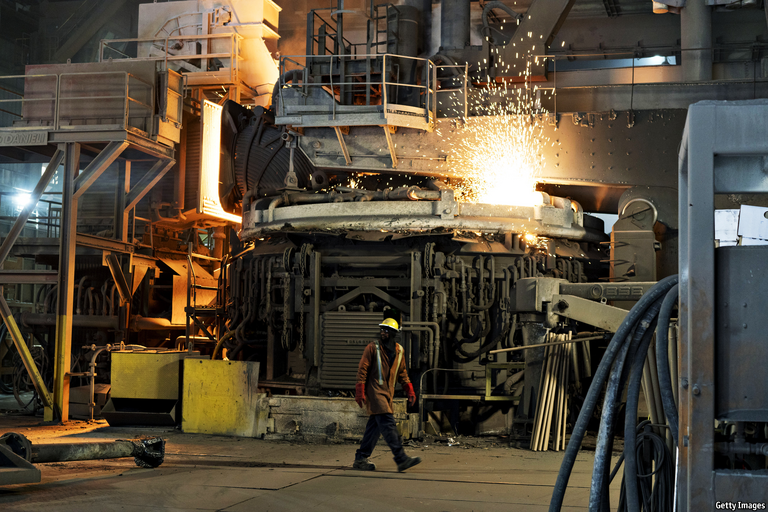
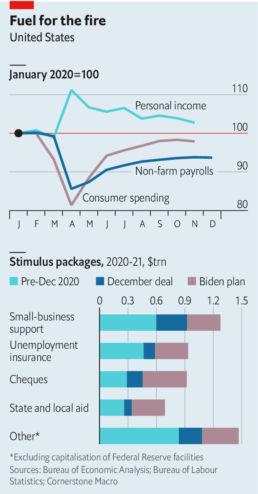
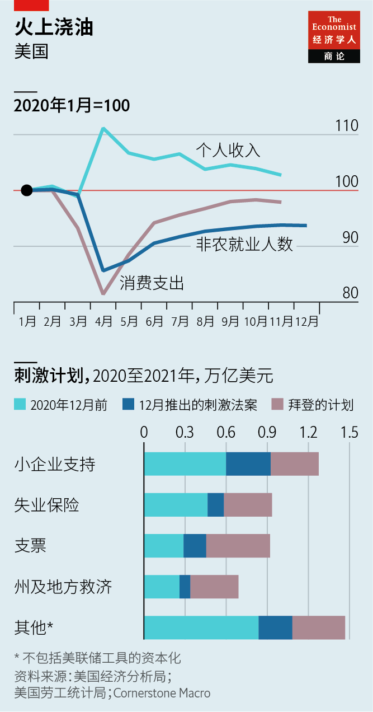

Text
2021-01-28T15:12:25+00:00
America’s recovery
美国的复苏
美國的復蘇
Fire without fury
无怒之火
無怒之火
Will Joe Biden’s fiscal stimulus and the Fed’s loose monetary policy overheat the American economy?
拜登的财政刺激计划和美联储的宽松货币政策是否会让美国经济过热？
拜登的財政刺激計劃和美聯儲的寬鬆貨幣政策是否會讓美國經濟過熱？
ON JANUARY 20TH Joe Biden entered the White House during an economic crisis for the second time. On January 14th he unveiled his plan for dealing with the downturn wrought by the pandemic. Viewed from the bottom up, it combines vital spending on vaccines and health care, needed economic relief and other, more debatable handouts. Seen from the top down, it is a huge debt-funded stimulus. Mr Biden’s plan is worth about 9% of pre-crisis GDP, nearly twice the size of President Barack Obama’s spending package in 2009. And it is big, too, relative to the shortfall in demand that America might suffer once it puts the winter wave of covid-19 behind it, given the stimulus already in place.
一月二十日，拜登第二次在经济危机期间踏入白宫。1月14日，他公布了一项计划以应对疫情造成的经济衰退。自下而上看，它结合了疫苗和医疗方面的重要支出、必需的经济救济，以及其他更具争议的援助。自上而下看，这是一个依靠举债的庞大刺激计划。拜登的计划规模相当于危机前美国GDP的9%左右，是奥巴马2009年开支计划的近两倍。而且，考虑到已经实施的刺激措施，该计划相对于美国在冬季疫情过去后可能面对的需求不足而言也堪称庞大。
一月二十日，拜登第二次在經濟危機期間踏入白宮。1月14日，他公布了一項計劃以應對疫情造成的經濟衰退。自下而上看，它結合了疫苗和醫療方面的重要支出、必需的經濟救濟，以及其他更具爭議的援助。自上而下看，這是一個依靠舉債的龐大刺激計劃。拜登的計劃規模相當於危機前美國GDP的9%左右，是奧巴馬2009年開支計劃的近兩倍。而且，考慮到已經實施的刺激措施，該計劃相對於美國在冬季疫情過去後可能面對的需求不足而言也堪稱龐大。
A natural question to ask, then, is whether the proposal, admittedly an opening gambit in a negotiation with Congress, might overheat the economy if implemented. The most prominent figure to warn that this may happen is Larry Summers of Harvard University. His criticisms are notable both because he was an adviser to Mr Obama and because he was hitherto perhaps the world’s foremost advocate of deficit spending. “If we get covid behind us, we will have an economy that is on fire,” he said on January 14th.
那么人们自然会问，如果该计划真能实施——诚然它只是与国会谈判的开局招数——是否可能让经济过热？警告这种情况可能发生的最著名人物是哈佛大学的拉里·萨默斯。他的评议之所以引人关注，一方面因为他曾是奥巴马的顾问，另一方面是他可能是迄今为止世界最主要的赤字支出倡导者。“如果摆脱了疫情，我们将会面对一个过热失火的经济。”他在1月14日表示。
那麼人們自然會問，如果該計劃真能實施——誠然它只是與國會談判的開局招數——是否可能讓經濟過熱？警告這種情況可能發生的最著名人物是哈佛大學的拉里·薩默斯。他的評議之所以引人關注，一方面因為他曾是奧巴馬的顧問，另一方面是他可能是迄今為止世界最主要的赤字支出倡導者。“如果擺脫了疫情，我們將會面對一個過熱失火的經濟。”他在1月14日表示。
There are three main reasons to suspect overheating might be on the cards: emerging evidence that the downturn may prove temporary; generous stimulus; and the Federal Reserve’s monetary-policy strategy. Take first the evidence that today’s downturn might be more temporary hiatus than prolonged slump. The number of non-farm jobs remains around 10m, or 6.3%, below its pre-pandemic peak—similar to the shortfall seen in 2010. Yet after the first wave of infections last year, unemployment fell much more rapidly than forecasters expected. If job creation were to return to the average pace achieved between June and November 2020, the pre-pandemic peak in employment would be reconquered in less than a year. It was not until midway through Mr Biden’s second vice-presidential term that such a milestone was reached last time.
猜测美国经济也许会过热主要有三个原因：有新证据表明衰退可能是暂时的；大手笔的刺激措施；美联储的货币政策策略。先来看看显示目前的衰退可能更多是暂时下滑而非长期低迷的证据。非农就业岗位的数量仍比疫情前的峰值低1000万左右，即6.3%，与2010年的缺口接近。但是，在去年第一波疫情过后，失业率下降之快远超预测机构的预期。假如创造就业的速度恢复到2020年6月至11月间的平均水平，那么就业率将在不到一年内就重新回到疫情前的高峰。而上一次危机达到这个里程碑时已是拜登第二个副总统任期的中段了。
猜測美國經濟也許會過熱主要有三個原因：有新證據表明衰退可能是暫時的；大手筆的刺激措施；美聯儲的貨幣政策策略。先來看看顯示目前的衰退可能更多是暫時下滑而非長期低迷的證據。非農就業崗位的數量仍比疫情前的峰值低1000萬左右，即6.3%，與2010年的缺口接近。但是，在去年第一波疫情過後，失業率下降之快遠超預測機構的預期。假如創造就業的速度恢復到2020年6月至11月間的平均水平，那麼就業率將在不到一年內就重新回到疫情前的高峰。而上一次危機達到這個裡程碑時已是拜登第二個副總統任期的中段了。
Bolstering the case for a rapid rebound is the fact that economic disruption appears concentrated in certain sectors, rather than spread widely. America shed jobs, on net, in December, but only because the leisure and hospitality industries were hit by social distancing. The ratio of job openings to unemployed workers remains high and, outside the affected sectors, wage growth has not fallen much. The shortfall in spending is also concentrated. Consumer spending in the week to January 3rd was down by just 2.8% compared with a year earlier, according to Opportunity Insights, a research group. Yet retail spending on goods was 16.5% higher; it is restaurants, transport and entertainment that are in trouble. And stimulus has more than made up the disruption to incomes in 2020. In November Americans’ total after-tax income was 4.3% higher than a year ago.
一个事实支撑了经济会快速反弹的预测：对经济的破坏看起来集中在某些行业而非广泛分布。美国去年12月就业岗位出现净减少，但这只是因为休闲与餐旅业受到了社交疏离措施的冲击。职位空缺与失业者之比仍在高位，而在受影响的行业之外工资增长的降幅不大。消费下降也比较集中。据研究组织Opportunity Insights的数据，在到1月3日的一周里消费支出与去年同期相比仅下降了2.8%。但这期间商品零售支出增长了16.5%，陷入困境的是餐饮、交通和娱乐业。而且刺激措施所做的弥补已经超过了2020年的收入损失。11月，美国人的税后总收入同比增加了4.3%。
一個事實支撐了經濟會快速反彈的預測：對經濟的破壞看起來集中在某些行業而非廣泛分布。美國去年12月就業崗位出現凈減少，但這只是因為休閑與餐旅業受到了社交疏離措施的衝擊。職位空缺與失業者之比仍在高位，而在受影響的行業之外工資增長的降幅不大。消費下降也比較集中。據研究組織Opportunity Insights的數據，在到1月3日的一周里消費支出與去年同期相比僅下降了2.8%。但這期間商品零售支出增長了16.5%，陷入困境的是餐飲、交通和娛樂業。而且刺激措施所做的彌補已經超過了2020年的收入損失。11月，美國人的稅後總收入同比增加了4.3%。
Indeed, the arithmetic of stimulus is a second reason why the economy may heat up. Before December, total fiscal stimulus in 2020 amounted to almost $3trn (about 14% of GDP in 2019), much more than the probable fall in output. Social-distancing measures meant that much of this cash piled up in bank accounts. According to Fannie Mae, a government-backed housing-finance firm, by mid-December Americans had accumulated about $1.6trn in excess savings. It is hard to know what might happen to this cash pile; economists typically assume that households are much less likely to spend wealth windfalls (such as the gains from a rise in the stockmarket) than income. But if people instead regard these excess savings as delayed income, then the cash hoard represents stimulus that has not yet gone to work, to be unleashed when the economy fully reopens.
事实上，刺激措施的账目是美国经济可能会过热的第二个原因。在12月前，2020年的财政刺激措施总额已接近三万亿美元（约为2019年GDP的14%），远高于可能的产出下降。保持社交距离的措施让这些资金大多积聚在人们的银行账户中。据美国政府支持的住房融资公司房利美（Fannie Mae）的数据，到12月中旬，美国人已经积累了约1.6万亿美元的过剩储蓄。很难知道人们会怎么使用这些现金。经济学家通常认为，比起一般收入，家庭对于意外之财（比如股市上涨带来的收益）的花钱意愿要小得多。但如果人们把这些过剩储蓄视为延迟的收入，那么这些囤积的现金就代表尚未发挥作用的刺激力量，将在经济完全重启时释放出来。
事實上，刺激措施的賬目是美國經濟可能會過熱的第二個原因。在12月前，2020年的財政刺激措施總額已接近三萬億美元（約為2019年GDP的14%），遠高於可能的產出下降。保持社交距離的措施讓這些資金大多積聚在人們的銀行賬戶中。據美國政府支持的住房融資公司房利美（Fannie Mae）的數據，到12月中旬，美國人已經積累了約1.6萬億美元的過剩儲蓄。很難知道人們會怎麼使用這些現金。經濟學家通常認為，比起一般收入，家庭對於意外之財（比如股市上漲帶來的收益）的花錢意願要小得多。但如果人們把這些過剩儲蓄視為延遲的收入，那麼這些囤積的現金就代表尚未發揮作用的刺激力量，將在經濟完全重啟時釋放出來。
In December President Donald Trump signed into law another $935bn of deficit spending, which extended unemployment benefits, provided more support for small firms, and sent most Americans a cheque for $600. This ensured that lost income would continue to be replaced. Mr Biden’s proposed $1.9trn of stimulus, which includes another $1,400 in cheques, would make the total fiscal boost in 2021 roughly equal to that in 2020.
特朗普在12月签署了另一项9350亿美元的赤字支出法案，延长失业救济，为小企业提供更多支持，还给大多数美国人发放了600美元的支票。这确保了人们损失的收入将继续得到弥补。拜登提出的1.9万亿美元刺激方案（包括再向个人发放1400美元的支票）将使2021年的财政刺激支出总额与2020年大致相当。
特朗普在12月簽署了另一項9350億美元的赤字支出法案，延長失業救濟，為小企業提供更多支持，還給大多數美國人發放了600美元的支票。這確保了人們損失的收入將繼續得到彌補。拜登提出的1.9萬億美元刺激方案（包括再向個人發放1400美元的支票）將使2021年的財政刺激支出總額與2020年大致相當。
Jason Furman, another former Obama adviser, calculates that the combined impact of the December package and the Biden plan would be about $300bn per month for the nine months in 2021 for which the measures will be in effect. By comparison, the shortfall in GDP, compared with its pre-crisis trend, was only about $80bn in November. Typically, Keynesians argue that fiscal stimulus boosts the economy because of a sizeable “multiplier” effect. But the case for the stimulus to be as large as Mr Biden’s proposal “has to be that you think the multiplier in 2021 is really small”, says Mr Furman. Otherwise, it seems destined to take total spending in the economy beyond what it can produce next year, resulting in a burst of inflation.
据奥巴马另一位前顾问贾森·弗曼（Jason Furman）计算，把12月的刺激法案和拜登的计划加起来，那么在2021年这些措施生效的九个月内，每月将支出约3000亿美元。相比之下，在去年11月时GDP相较危机前走势仅相差800亿美元左右。通常情况下，凯恩斯主义者认为，财政刺激政策之所以能提振经济是因为存在相当大的“乘数”效应。但要赞成拜登提出的这么庞大的刺激计划，理由“只能是认为2021年的乘数实在很小”，弗曼说。否则，这似乎定然会使美国经济的总支出超过明年可能的产出，导致通胀爆发。
據奧巴馬另一位前顧問賈森·弗曼（Jason Furman）計算，把12月的刺激法案和拜登的計劃加起來，那麼在2021年這些措施生效的九個月內，每月將支出約3000億美元。相比之下，在去年11月時GDP相較危機前走勢僅相差800億美元左右。通常情況下，凱恩斯主義者認為，財政刺激政策之所以能提振經濟是因為存在相當大的“乘數”效應。但要贊成拜登提出的這麼龐大的刺激計劃，理由“只能是認為2021年的乘數實在很小”，弗曼說。否則，這似乎定然會使美國經濟的總支出超過明年可能的產出，導致通脹爆發。
Were the economy to show signs of such overheating, the Fed might typically be expected to raise interest rates to cool things down. Indeed, since January 6th, when the Democrats won the crucial Senate seats in Georgia that might allow them to pass a big stimulus, the ten-year Treasury yield has risen from about 0.9% to around 1.1%. The yields on inflation-linked bonds have risen roughly commensurately, suggesting that bond investors have been expecting higher real interest rates, rather than just higher inflation.
如果经济出现这样的过热迹象，人们通常可能预期美联储会加息来降温。事实上，自1月6日民主党赢得关键的佐治亚州的参议院席位（可能会让它得以通过大规模刺激计划）以来，十年期美国国债收益率已从约0.9%上升至1.1%左右。通胀挂钩债券的收益率的涨幅也大致相当，表明债券投资者已经在预期实际利率会提高，而不仅仅是通胀上升。
如果經濟出現這樣的過熱跡象，人們通常可能預期美聯儲會加息來降溫。事實上，自1月6日民主黨贏得關鍵的佐治亞州的參議院席位（可能會讓它得以通過大規模刺激計劃）以來，十年期美國國債收益率已從約0.9%上升至1.1%左右。通脹掛鉤債券的收益率的漲幅也大致相當，表明債券投資者已經在預期實際利率會提高，而不僅僅是通脹上升。
But the Fed is tripping over itself to signal that monetary policy will remain loose—a third reason to expect overheating. The time to raise interest rates is “no time soon”, said Jerome Powell, its chairman, on January 14th. He also pooh-poohed the idea that the Fed might soon taper its $120bn monthly purchases of Treasuries and mortgage-backed securities. Mr Powell says the Fed has learned the lessons of 2013, when its hints that it might taper asset purchases sent bond markets into a tizz. Monetary policymakers still say that preserving “smooth market functioning” is one of the goals of their purchases, even though no dysfunction has been seen in bond markets since the spring.
但美联储正在给自己使绊子，过于急切地发出信号表明货币政策将保持宽松——这是预计经济会过热的第三个理由。1月14日，美联储主席鲍威尔表示“短期内不会”加息。有人认为美联储可能很快会缩减它每月1200亿美元的国债和抵押贷款证券购买量，鲍威尔对此嗤之以鼻。他表示美联储已经吸取了2013年的教训，当时它暗示可能会缩减资产购买量，结果导致债券市场大乱。货币政策制定者仍表示维护“市场平稳运行”是其购买资产的目标之一，尽管自去年春季以来债券市场并未出现运作失灵的情况。
但美聯儲正在給自己使絆子，過於急切地發出信號表明貨幣政策將保持寬鬆——這是預計經濟會過熱的第三個理由。1月14日，美聯儲主席鮑威爾表示“短期內不會”加息。有人認為美聯儲可能很快會縮減它每月1200億美元的國債和抵押貸款證券購買量，鮑威爾對此嗤之以鼻。他表示美聯儲已經吸取了2013年的教訓，當時它暗示可能會縮減資產購買量，結果導致債券市場大亂。貨幣政策制定者仍表示維護“市場平穩運行”是其購買資產的目標之一，儘管自去年春季以來債券市場並未出現運作失靈的情況。
The Fed is so willing to keep the pedal to the metal because, in contrast to the recovery from the financial crisis, it is seeking to overshoot its 2% inflation target, in order to make up for continuing shortfalls. The strategy, announced last summer, is still being digested by investors. It is unclear whether policymakers are committed to “average inflation targeting” as an end in itself, or simply as a means to stop inflation expectations from slipping too much during the downturn, argues David Mericle of Goldman Sachs, a bank. Given that inflation expectations have risen recently, that distinction might prove important. Regardless, the Fed has been clear that it will not raise rates until inflation is “on track to moderately exceed 2% for some time”.
美联储如此积极地要继续踩油门是因为，与金融危机后的复苏不同，它目前正在努力超额实现其2%的通胀目标，以弥补持续的未达标。对于这一去年夏天宣布的战略，投资者尚未完全消化。高盛的大卫·梅里克（David Mericle）认为，目前还不清楚决策者是执着于“平均通胀目标”这个目的本身，还是仅视之为阻止通胀预期在衰退期过度下滑的手段。鉴于近期通胀预期有所上升，区分这两者可能是重要的。尽管如此，美联储却已经明言，在通胀“有望在一段时间内适度超过2%”之前它是不会加息的。
美聯儲如此積極地要繼續踩油門是因為，與金融危機後的復蘇不同，它目前正在努力超額實現其2%的通脹目標，以彌補持續的未達標。對於這一去年夏天宣布的戰略，投資者尚未完全消化。高盛的大衛·梅里克（David Mericle）認為，目前還不清楚決策者是執着於“平均通脹目標”這個目的本身，還是僅視之為阻止通脹預期在衰退期過度下滑的手段。鑒於近期通脹預期有所上升，區分這兩者可能是重要的。儘管如此，美聯儲卻已經明言，在通脹“有望在一段時間內適度超過2%”之前它是不會加息的。
Those who are zealously committed to breaking the world economy out of the low-rate, low-inflation trap of the 2010s might welcome the even larger burst of inflation that the current fiscal and monetary policy mix could enable. The Fed, however, is not in that camp. Were overheating to provoke it into earlier rate rises than markets expect, the assumption of cheap money that underpins today’s sky-high asset prices and the sustainability of rocketing public debt might begin to unravel.
那些热切想要世界经济摆脱2010年代的低利率、低通胀陷阱的人们可能乐见更大的通胀爆发。目前的财政和货币政策的综合作用可能会导致这种情况。然而美联储并不属于这一阵营。假如经济过热促使美联储早于市场预期加息，那么支撑起如今超高资产价格的对廉价资金的假定和公共债务飙升的可持续性可能就会开始崩塌。
那些熱切想要世界經濟擺脫2010年代的低利率、低通脹陷阱的人們可能樂見更大的通脹爆發。目前的財政和貨幣政策的綜合作用可能會導致這種情況。然而美聯儲並不屬於這一陣營。假如經濟過熱促使美聯儲早於市場預期加息，那麼支撐起如今超高資產價格的對廉價資金的假定和公共債務飆升的可持續性可能就會開始崩塌。
Such a scenario remains a tail risk. The most likely outcome is that Congress agrees on a smaller stimulus than Mr Biden has proposed, and that overheating, if it occurs, proves temporary. Beyond that, nobody really knows how fast the economy can grow without setting off inflation. Should economic policy stay in uncharted territory, though, its speed limits may be tested more frequently. ■
这样的情形仍只是尾部风险。最可能的结果是，国会通过了比拜登的提案规模更小的刺激方案，而即使出现经济过热，也只会是暂时的。超过了这个程度，没人真的知道经济能增长多快而不引发通胀。但如果经济政策一直行驶在未知地域，那么其速度极限可能会经受更频繁的考验。
這樣的情形仍只是尾部風險。最可能的結果是，國會通過了比拜登的提案規模更小的刺激方案，而即使出現經濟過熱，也只會是暫時的。超過了這個程度，沒人真的知道經濟能增長多快而不引發通脹。但如果經濟政策一直行駛在未知地域，那麼其速度極限可能會經受更頻繁的考驗。